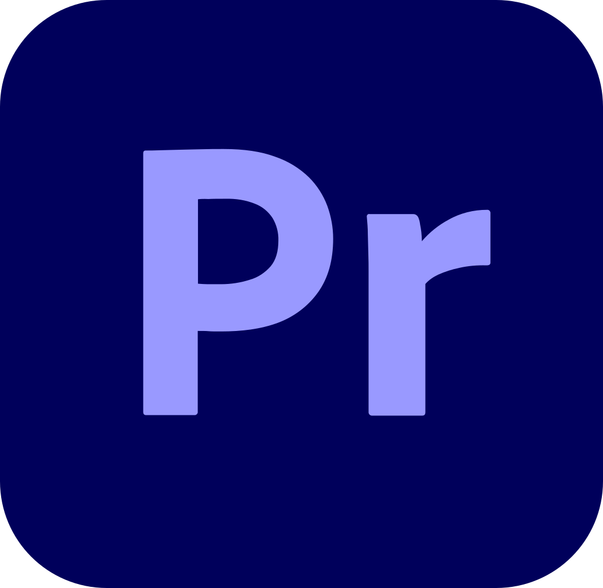
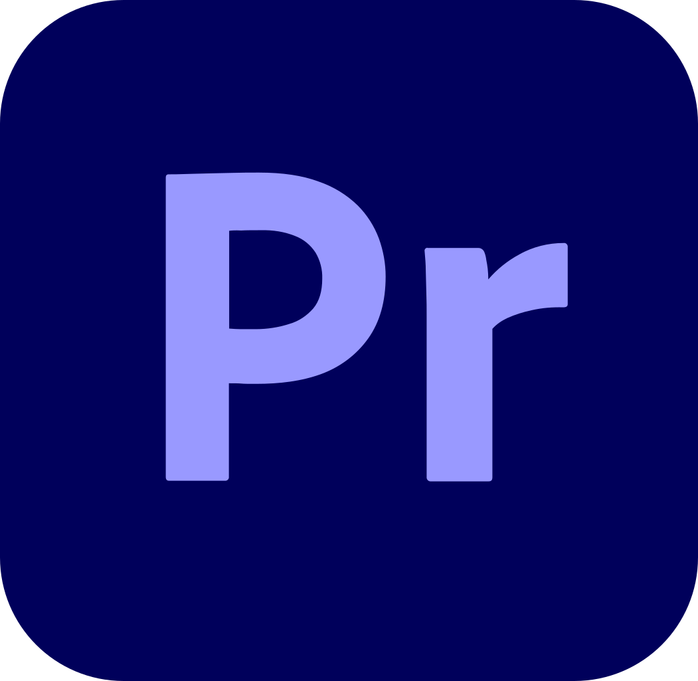

Acerca de mi
Experimentado fotógrafo, productor de videos y piloto de drone para marcas comerciales, con una vasta experiencia en fotografía con un recorrido de 8 años, 7 años como piloto de drone y 3 años en producción de videos, además soy el fundador de Mau Films, una empresa que brinda servicios de fotografía y producción de videos. Soy una persona bastante productiva, siempre listo para enfrontar cualquier situación que la vida me ponga, aspirando a crecer como persona y compartir mi conocimiento en el tema con la mayor cantidad de personas que pueda.
Experiencia Laboral
Una vasta experiencia laboral en varios campos, pero sobre todo enfocado en la fotografía y el video, he trabajado con varias personas y marcas mediante el nombre de mi empresa Mau Films, llevo 1 año de experiencia trabajando con diferentes clientes ya sea creando contenido o dirigiendo proyectos.


Habilidades
Mis habilidades van desde ser un experimentado piloto de drone hasta lograr crear paginas web, se puede
decir
que tengo varias habilidades pero las mas importantes y las que he desarrollado mas son mis habilidades
en la
fotografía y en la producción de video y no solo eso, también dentro de estas habilidades engloban
muchas mas
habilidades como el manejo de programas de edición de fotos y retoque como Lightroom, Photoshop,
Dehancer,
Bridge y Blender, en el aspecto de producción de video es el mismo caso.
Me he visto obligado a aprender a usar varios programas de edición y aprenderlos netamente, esto quiere
decir
que tengo bastante experiencia editando videos y algo mas importante y que me fascina es el etaloje de
estos
mismos, que otras palabras se refiere a darle el color a los videos y es un aspecto sumamente
importante, además
esto empezando a aprender el diseño de sonido, los programas que suelo usar para esto son: DaVinci
Resolve,
Media Encoder, Adobe Premiere, After Effects y últimamente Blender para realizar efectos especiales más
elaborados.


 



Cursos
Mi búsqueda incansable por conocimiento me ha llevado por un camino singular. En mi trayecto educativo,
no he dependido exclusivamente de cursos formales, sino que he abrazado la autodidacta, nutriéndome de
incontables vídeos de YouTube. Cada video visto ha sido un peldaño en mi escalera de crecimiento
personal y profesional.
Mi filosofía es la constante renovación del aprendizaje, ya que considero que en cada rincón del
conocimiento hay una chispa de novedad esperando ser descubierta. Mantengo la firme convicción de que el
cese en la búsqueda de aprendizaje equivale a un estancamiento en la evolución como individuo. Así,
insisto en que nunca debe apagarse la llama del aprendizaje para seguir progresando y trascender como
ser humano.
Educacion
Mi travesía educativa ha estado marcada por una permanencia significativa en la institución Espíritu
Santo. En la actualidad, me hallo en la culminación de mi año de bachillerato, al borde de cruzar el
umbral de la graduación. Además del ámbito académico, he explorado las complejidades del terreno
laboral, enfrentando y superando diversas curvas de aprendizaje.
Cada reto, ya sea la asimilación de nuevas herramientas informáticas o la expansión de mis destrezas
como fotógrafo y realizador audiovisual, ha sido un motor que impulsa mi constante evolución. En cada
experiencia, he abrazado la oportunidad de crecimiento, forjando un sendero único y enriquecedor hacia
la excelencia en mis habilidades y conocimientos.